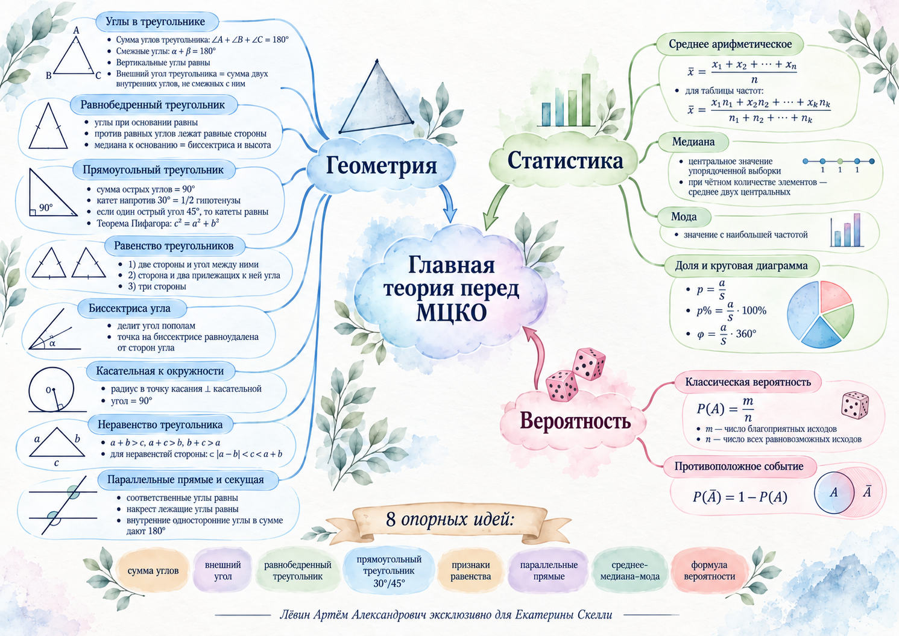

Сумма и внешний угол
Смежные углы дают 180°. Вертикальные углы равны. Внешний угол треугольника равен сумме двух внутренних углов, с ним не смежных.
Пример из занятия: 42° + 62° = 104°.
Исследовать угловые связи →Подготовка к МЦКО · 8 класс · 19 сентября 2026
Опорный маршрут занятия: угловые связи → равнобедренные и прямоугольные треугольники → свойства и построения → статистика → классическая вероятность.
Цель. Переводить условие на язык свойств, выбирать короткую цепочку обоснований, проверять результат по исходному условию и аккуратно считать статистические и вероятностные величины.
01 · Геометрия
Каждый найденный угол должен иметь причину: сумма углов, смежность, вертикальность, равнобедренность или параллельность.
Смежные углы дают 180°. Вертикальные углы равны. Внешний угол треугольника равен сумме двух внутренних углов, с ним не смежных.
Пример из занятия: 42° + 62° = 104°.
Исследовать угловые связи →Если AB = BC, то углы при основании AC равны. Верно и обратное утверждение: против равных углов лежат равные стороны.
Медиана, проведённая к основанию равнобедренного треугольника, одновременно является биссектрисой и высотой.
Если биссектриса делит угол A пополам, удобно положить половину угла равной x, тогда весь угол равен 2x.
Катет напротив 30° равен половине гипотенузы. При остром угле 45° второй острый угол также равен 45°, поэтому катеты равны.
Контроль: гипотенуза лежит напротив прямого угла и является самой длинной стороной.
Эта двойная оценка удобна, когда одна сторона неизвестна. Для сторон 3 и 5 получаем 2 < c < 8.
В утверждениях со словом «всегда» достаточно одного корректного контрпримера для опровержения; для «существует» достаточно одного подходящего примера с проверкой условий.
02 · Инструменты
Сначала фиксируем данные, затем выбираем рабочую конфигурацию и только после этого считаем.
| Признак | Данные |
|---|---|
| 1 | две стороны и угол между ними |
| 2 | сторона и два прилежащих угла |
| 3 | три стороны |
Соответственные и накрест лежащие углы равны; сумма внутренних односторонних равна 180°.
Эти же связи работают как признаки параллельности.
Точка на биссектрисе равноудалена от сторон угла; расстояния измеряются по перпендикулярам.
Радиус к точке касания перпендикулярен касательной: угол равен 90°.
Разобранные задачи
Здесь сохранены ключевые решения из чек-листа.
Дано: ∠B = 62°, внешний угол при A = 138°.
Проверка: 42° + 62° = 104°. Ответ: 104°.
Дано: AB = BC, AD — биссектриса, ∠ADC = 132°.
Ответ: 116°.
Дано: ∠CDE = 54°, ∠CED = 62°, CF — биссектриса, AB ∥ DE.
Ответ: 86°.
Дано: AB = BC, ∠ABC = 120°, BM — медиана, AF ⟂ AB, FM = 63.
Ответ: 42.
03 · Статистика
Главный контроль — частоты, объём выборки и согласованность доли с сектором.
Медиана — центральное значение упорядоченной выборки; при чётном числе элементов берут среднее двух центральных. Мода — самое частое значение.
Для 31 из 160 получаем примерно 19,4% и 69,75°. Процентная доля и угол сектора описывают одну и ту же часть целого.
Открыть модель долей →Доли: 14,4%; 15%; 15,6%; 19,4%; 35,6%.
Оценки 2, 3, 4, 5 встречаются 1, 4, 7, 3 раза.
04 · Вероятность
Сначала выписываем пространство исходов, затем благоприятные исходы и только после этого делим.
n — число всех равновозможных исходов, m — число благоприятных.
| Орёл | Решка | |
|---|---|---|
| Орёл | ОО | ОР |
| Решка | РО | РР |
Ровно один орёл: ОР и РО, поэтому P = 2/4 = 0,5.
Хотя бы один орёл: 1 − P(РР) = 3/4.
Исследовать исходы →5 белых, 3 чёрных, 2 серых: всего 10.
Для события «любой цвет, кроме чёрного»: 7/10 = 0,7, что совпадает с 1 − 0,3.
Перепутать благоприятные и все исходы; считать ОР и РО одним исходом; использовать классическую формулу без проверки равновозможности; потерять формат ответа.
Визуальный конспект
Локальное изображение из папки ученика. Нажмите для увеличения.

05 · Путь А
Условия перенесены из исходного чек-листа без добавления новых задач.
Мини-квиз
1. Чему равен внешний угол треугольника?
2. Что обязательно проверяем перед формулой P = m/n?
3. В равнобедренном треугольнике медиана к основанию одновременно…
Самопроверка
0 из 8